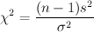

Statistics > Hypothesis Tests > 1-Population Variance
This utility performs calculations for testing claims about a population
variance (or standard deviation). The population is assumed to have a
normal distribution. The null hypothesis of a claim about a
population variance σ2 is
&sigma = &sigma02. The alternative
hypothesis can be one of the following: σ < σ0,
σ > σ0, or
σ ≠ σ0.
The test statistic is computed using the following formula:

where s is the sample standard deviation, σ
is the hypothesized population standard deviation,
and n is the sample size.
To use the utility, follow these steps:
- If individual samples are entered in a single column of the
Datasheet, select the Samples in column: radio button, and
select the column name in the drop-down menu.
- To use summary statistics of the sample data, select the
Summarized sample data: radio button, and input the sample size
in the provided text field. Select the Variance radio button
to provide the sample variance, and enter the sample variance in the
given text field. To provide the sample standard deviation, select
the Standard deviation radio button and input it in the corresponding
text field.
- Enter the significance or confidence level (between 0 and 1).
- Select the form of the alternative hypothesis in the
Alternative Hypothesis: drop-down menu. Enter the
hypothesized population variance in the provided text box.
- Click the OK button to perform the computation. The
results will be displayed in the log window.
Sample Outputs
The null hypothesis and the alternative hypothesis are displayed.
The results, along with the input parameters, are displayed in a table.
[N = sample size; Sample Stdev s = sample standard deviation
calculated from the individual samples
or provided directly by the user; Sample Var s2 = sample variance;
Significance Level = 1 - confidence level; Critical Value =
critical value corresponding to the significance level;
Test Statistic = test statistic corresponding to the hypothesized variance;
p-Value = p-Value corresponding to the test statistic]
Hypothesis Test - One population variance: confidence level = 0.95
Input: Summary data
Null hypothesis: σ2 = 1.44
Alternative hypothesis: σ2 ≠ 1.44
| N |
Sample Stdev s |
Sample Var s2 |
Significance Level |
Critical Value |
Test Statistic |
p-Value |
| 100 |
1.500 |
2.250 |
0.05 |
73.361, 128.422 |
154.688 |
0.0006 |